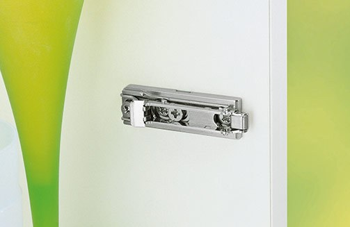

Петли с регулируемым встроенным доводчиком: два силиконово-масляных демпфера внутри чашки.
| Открывание | 94° · 105° · 110° · 120° · 155° |
| Двери | дерево, алюминиевая рамка |
| Монтаж | Domi — защёлкиванием или на винтах |
| Установка | стандартная, угловая, Crampon |